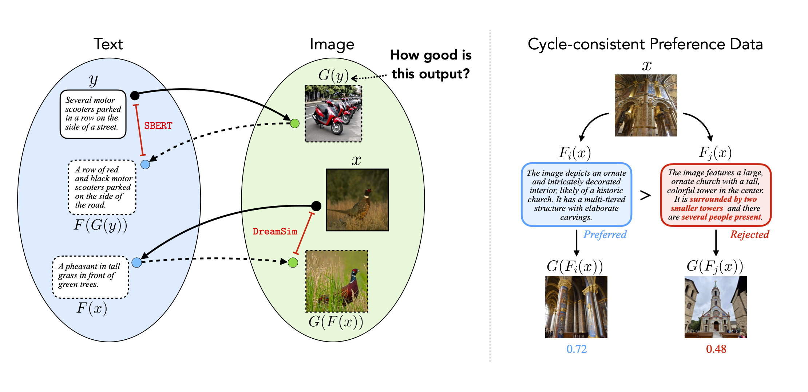
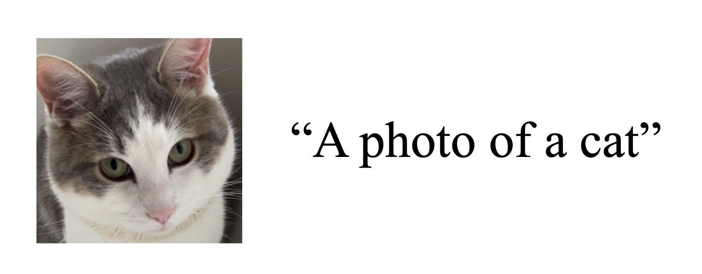
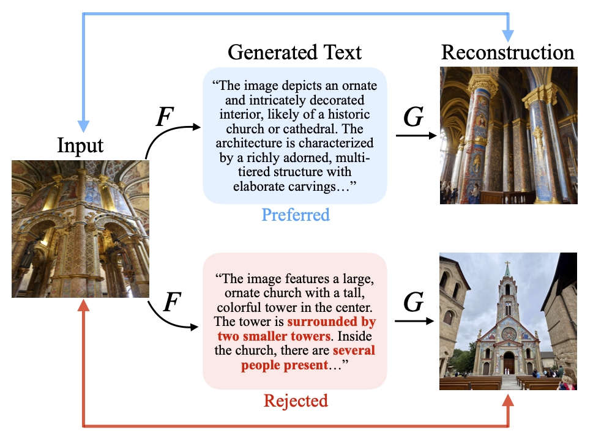

|
|
|
|
|
|
|
|
|
| Paper Code Dataset Dataset Viewer Bibtex |

| Learning alignment between language and vision is a fundamental challenge especially as multimodal data becomes increasingly detailed and complex. Existing methods often rely on collecting human or GPT-4V preferences, which are costly and time-intensive.We propose an alternative approach that leverages cycle consistency as a supervisory signal. Given an image and generated text, we map the text back to image space with a text-to-image model and compute the similarity between the original image and its reconstruction. Analogously, for image-to-text generation, we measure textual similarity between an input caption and its reconstruction through the cycle. We use the cycle consistency score to rank candidates and construct a preference dataset of 866K comparison pairs. The reward model trained on our dataset outperforms state-of-the-art alignment metrics on detailed captioning, with superior inference-time scalability when used as a verifier for best-of-$N$ sampling. Furthermore, performing direction preference optimization using our dataset enhances performance across all vision-language tasks -- including perception, reasoning, hallucination, and detailed captioning -- despite only containing captioning instructions. Applying Diffusion-DPO enhances text-to-image generation, particularly for complex, dense prompts. |
Installation:
pip install cycle_reward

Usage:
from cycle_reward import cycle_reward
from PIL import Image
model = cycle_reward(device="cuda")
image = Image.open("cat.jpg")
caption = "a photo of a cat"
score = model.score(image, caption)

|
Our dataset of cycle consistency-based preferences consists of 398K comparison pairs for image-to-text generation and 468K pairs for text-to-image synthesis. For image-to-text evaluation, we observe that preferred and rejected texts vary in levels of comprehensiveness, hallucination, and density. Additionally for text-to-image, we find that images containing fine-grained details produce better text reconstructions, resulting in higher preference. |
| Research was sponsored by the Department of the Air Force Artificial Intelligence Accelerator and was accomplished under Cooperative Agreement Number FA8750-19-2-1000. The views and conclusions contained in this document are those of the authors and should not be interpreted as representing the official policies, either expressed or implied, of the Department of the Air Force or the U.S. Government. The U.S. Government is authorized to reproduce and distribute reprints for Government purposes notwithstanding any copyright notation herein. |
@article{bahng2025cyclereward,
title={CycleReward: Learning Image-Text Alignment without Human Preferences},
author= {Bahng, Hyojin and Chan, Caroline and Durand, Fredo and Isola, Phillip},
journal={arXiv preprint arXiv:xxxxx},
year={2025}
}